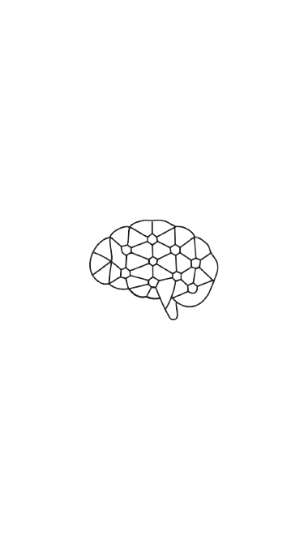

Sou psicóloga com formação em Neuropsicologia, Terapia Cognitivo-Comportamental e Psicopedagogia, atuando com crianças, adolescentes e adultos.
Meu trabalho é guiado pelo compromisso com o cuidado emocional em suas múltiplas formas, respeitando a história, o funcionamento e o momento de vida de cada pessoa.
Acredito que um processo terapêutico eficaz começa na construção de um vínculo seguro e respeitoso. Por isso, ofereço um espaço acolhedor, onde é possível falar, sentir e compreender com mais clareza pensamentos, emoções e comportamentos, sem julgamentos e no próprio ritmo.

Avaliação e Reabilitação Neuropsicológica
Processo de identificação e intervenção em alterações cognitivas e comportamentais em crianças, adolescentes e adultos, decorrentes de dificuldades no neurodesenvolvimento ou disfunções cerebrais, com o objetivo de promover o fortalecimento de habilidades e a recuperação funcional.
Psicoterapia
A psicoterapia é um processo de cuidado em saúde mental que oferece um espaço seguro para crianças, adolescentes e adultos compreenderem suas emoções, pensamentos e comportamentos. Por meio de uma escuta qualificada e de intervenções terapêuticas, o trabalho é conduzido respeitando a história, o ritmo e as necessidades de cada pessoa. Esse processo favorece o autoconhecimento, o desenvolvimento de estratégias mais funcionais para lidar com desafios do dia a dia e a construção de uma relação mais saudável consigo e com o outro.
Atendimento Psicopedágico
O atendimento psicopedagógico é um processo de acompanhamento que busca compreender como a pessoa aprende e se relaciona com o conhecimento. É indicado para crianças, adolescentes e adultos que apresentam dificuldades no processo de aprendizagem, considerando aspectos cognitivos, emocionais e contextuais. Esse acompanhamento favorece o desenvolvimento de estratégias mais eficazes, fortalece habilidades e contribui para uma relação mais positiva com o aprender, respeitando as singularidades e o ritmo de cada indivíduo.
Avaliação Psicológica
A avaliação psicológica é um processo clínico que busca compreender o funcionamento emocional, cognitivo e comportamental de crianças, adolescentes e adultos. É realizada por meio de escuta qualificada e instrumentos psicológicos, respeitando a singularidade de cada pessoa. Contribuindo para intervenções mais direcionadas e decisões mais conscientes no cuidado com a saúde emocional.
Endereço:
Rua Cachoeira 84, Jardim Rosa de Franca
Guarulhos - SP

Esclareça suas dúvidas